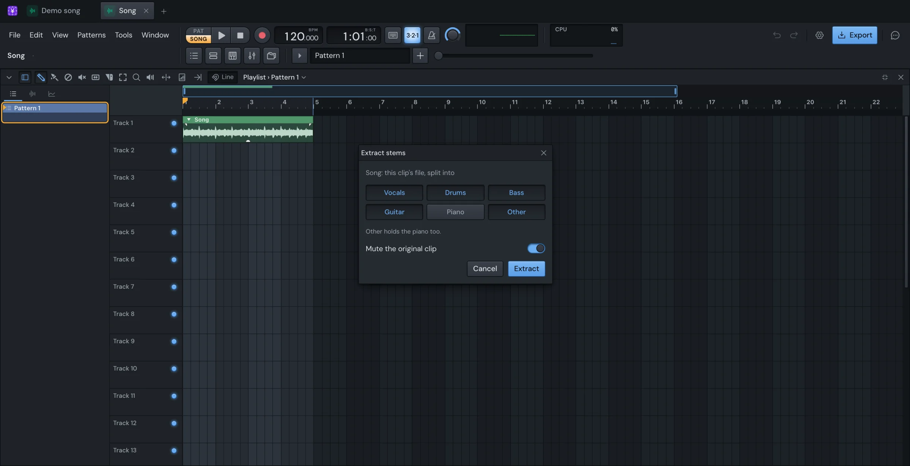
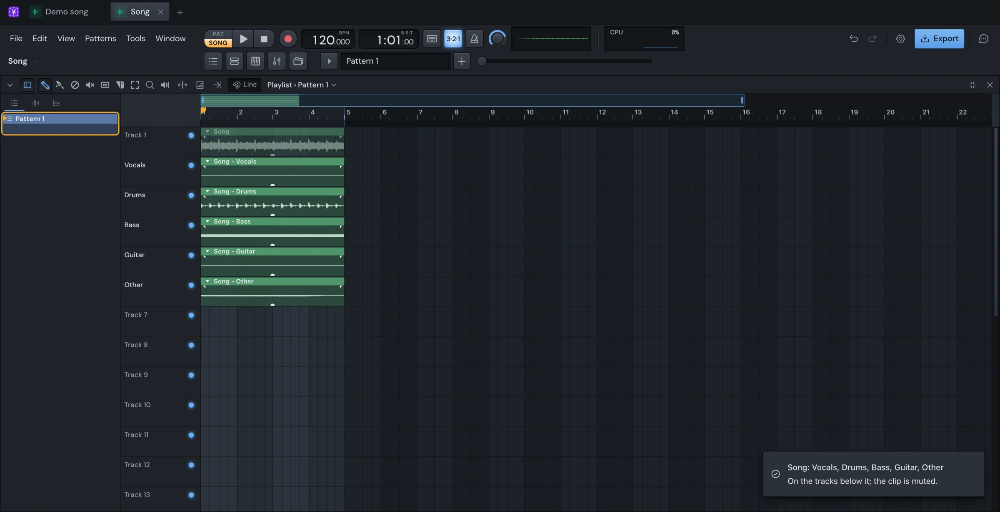
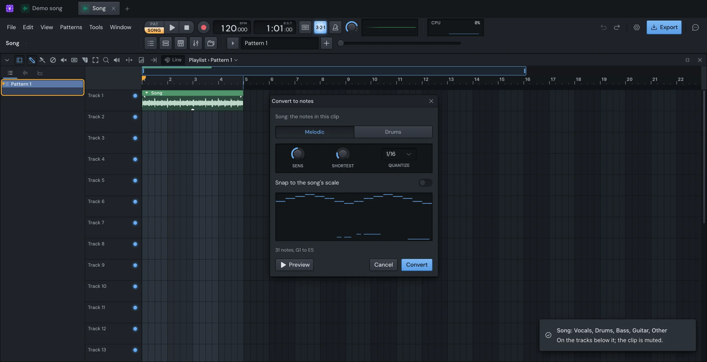

Finish
Stems and notes
Yen Studio can do two things to an audio clip. Extract stems splits its file into its parts: vocals, drums, bass, guitar, piano and the rest. Convert to notes writes the notes played in it as a pattern you can play with any instrument.
Both run on your Mac. Nothing is uploaded.
Where to find them
- In the Playlist: click the arrow at the start of an audio clip's title to open its menu, then choose Extract stems… or Convert to notes…. They work on that clip: the part of the file it plays.
- In the Channel rack: right-click an audio channel's button and choose Extract stems… or Convert to notes…. They work on the channel's whole file. They're greyed out until the channel has a sample, and plugin channels don't have them.
Each opens a small window.
The models download once
Each feature needs a model: a separation model for stems, a transcription model for notes. They aren't part of the download. The first time you use one, its window says it downloads a model once, and how big it is. Nothing is downloaded until you say yes.
- In Extract stems, the button says Download and extract. The model downloads, then the split starts.
- In Convert to notes, click Download in the window. Once it's there, the window listens to the file.
After that, the model stays on your Mac, for every song. To stop a download, click Cancel (in Extract stems, it's in the notification) or close Convert to notes' window. If a download is stopped or the connection drops, it carries on from where it was next time.
Extract stems

- Open Extract stems… on an audio clip.
- Choose the stems you want: Vocals, Drums, Bass, Guitar, Piano and Other. The first time, Vocals, Drums, Bass and Other are chosen.
- Leave Mute the original clip on to silence the clip they came from, or turn it off.
- Click Extract.
The window closes, and a notification says how far along the split is. Click Cancel in it to stop. A split can take a while, depending on how long the file is and on your Mac.
What Other holds
Other is everything you didn't choose. Choose Vocals and Other, and Other is the song without its vocals: an instrumental. Leave Guitar and Piano unchosen, and they're in Other. The window says what Other holds as you choose.
If you don't choose Other, what you didn't choose is left out. With Other chosen, the stems add up to the original.
What it makes
- Each stem becomes a file in your song, and a new audio channel in the Channel rack, named after the source channel and the stem.
- A clip of each stem goes on the tracks below the clip, lined up with it, as long as it and as far into the file. New tracks are named after their stem.
- The stem clips copy the original clip's gain, fades and stretch, and their channels play as the source channel did: its pitch, stretch and sample settings.
- The stems play into the master. Route them to Mixer tracks yourself if you want to.
- The new channels are selected, so you can find them in the rack.

Started from a channel in the Channel rack, the split works on the channel's whole file. Each stem gets a clip under every one of that channel's clips, and Mute its clips silences them all.
Splitting the same file the same way again reuses the stems it already made, so it's instant.
Convert to notes

- Open Convert to notes… on an audio clip.
- Wait while it says Listening…. A long file takes longer, and the window says so.
- Choose Melodic or Drums, and set the controls below. The drawing of the notes changes as you move them.
- Click Preview to hear the clip with its notes, looping. Click Stop to stop.
- Click Convert.
Closing the window, or clicking Cancel, stops it listening.
The settings
- Melodic hears notes of any pitch: a melody, a bass line, chords. Drums hears kicks, snares and hats.
- SENS (sensitivity) is how readily a sound counts as a note. Turn it up if notes are missing, down if there are notes that shouldn't be there.
- SHORTEST (Melodic only) leaves out notes shorter than this.
- QUANTIZE moves the notes' starts and ends onto a grid: 1/32, 1/16, 1/8 or 1/4. Off leaves them where they were heard.
- Snap to the song's scale (Melodic only) moves each note to the nearest note of the song's scale. It needs the song to have a scale: set one in the Piano roll.
Under the drawing, a line says what it heard: how many notes and their range, or how many kicks, snares and hats.
It works best on one instrument with clear notes. On a full mix, extract a stem first.
What it makes
- A new pattern with the notes, placed on the first free track under the clip, as long as the clip.
- For Melodic, the notes are on a new channel playing a plain tone from the starter kit. For Drums, the kick, snare and hat each get a channel playing the starter kit's.
- The pattern opens in the Piano roll.
The sampler is a placeholder. To hear the notes on a synth, right-click the channel button, choose Replace… and pick an instrument. The notes stay. See Plugins.
Started from a channel in the Channel rack, Convert to notes makes the pattern but doesn't place it on the Playlist.
Notes don't carry pitch bends. Drums only knows kicks, snares and hats: toms and cymbals are heard as whichever is nearest.
Undo
Extracting stems and converting to notes are one undo step each. Press ⌘Z to take away everything it added and unmute the original.
Something here wrong or missing? Tell us.